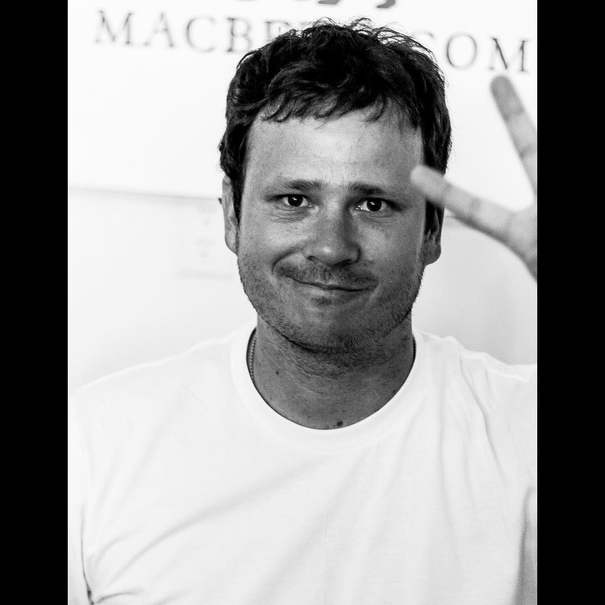

storytelling
through motion.
My name is Carlos Martinez. I'm a photographer based in Coquimbo, Chile. My passion for travel has inspired me to discover a new way of seeing the world and how to capture it.
From the high-octane environment of IndyCar racing to the serene perspective of high-altitude drone aerials, my work is a relentless pursuit of the cinematic. I believe photography is about capturing the energy that usually moves too fast for the naked eye.
Dedicated to professional motorsport and cinematic landscapes, I bring a unique South American perspective to the global stage.
Carlos Martinez